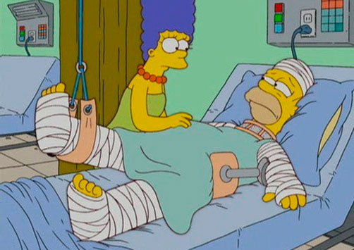

En Springfield tenemos los mejores doctores del pais.
El Hospital General de Springfield es uno de los mas importantes hospitales de Springfield. La primera vez que el Hospital aparece en escena fue en el episodio "Krusty Gets Busted".
El Hospital General de Springfield, parece ser el único hospital que posee la ciudad de Springfield, ya que el resto de los lugares médicos son simples consultorios mal manejados, sin contar el Instituto Mental Bosque Calmo (Calmwood Mental Hospital).
Ubicación
No se sabe una ubicación exacta aunque se ha visto que esta cerca del Cementerio de Springfield ya que en "Bart-Mangled Banner" cuando Bart mira por la ventana ve el cementerio. Aunque en "The Girl Who Slept Too Little" se ve que el cementerio es cambiado de posicion por el museo de estampillas, aunque en ese mismo episodio se muestra que podria estar cerca de la casa de Lenny.
Trabajadores
- Dr. Julius Hibbert
- A veces también el Dr. Nick Riviera, que además participa en consultorios que aparecen en algunos capítulos.
- Varias enfermeras (de las cuales la del Dr. Hibbert roba las esponjas).
- Concurso de Chile Picante la el proximo fin de semana.
- Festival de cine de Springfield.


Somos una ciudad pujante
Cuando este el monoriel
Vamos a ser del primer mundo